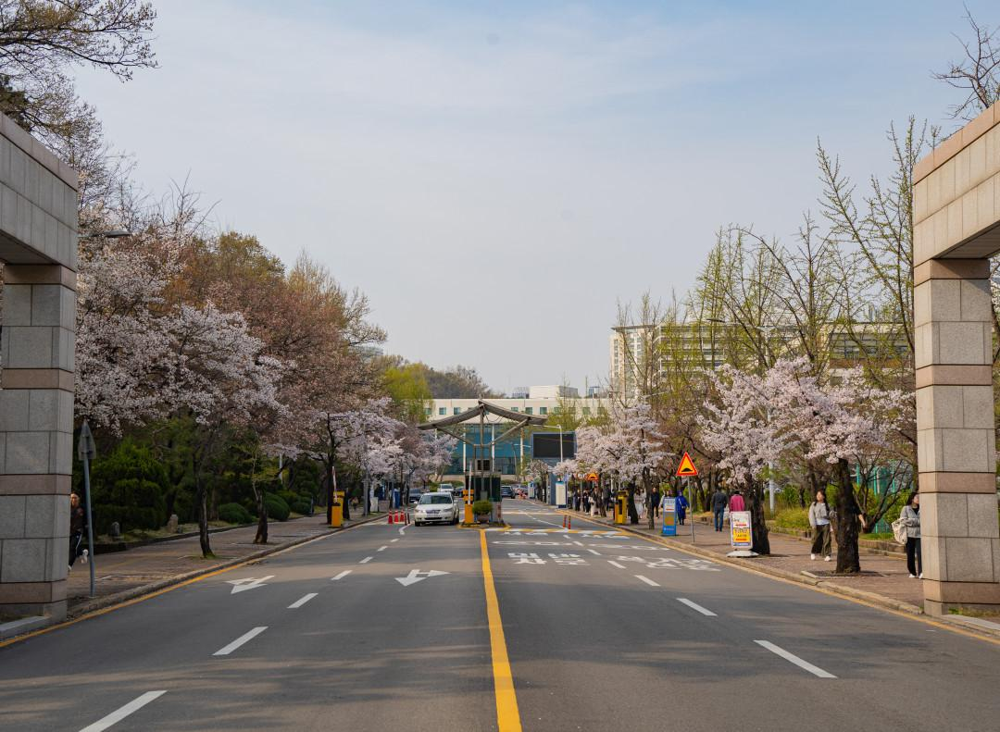
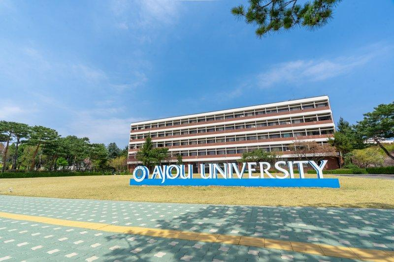

Find the university's official website and use its published channels for admissions, academic and general enquiries.
This student project does not operate an official university contact service. The links below direct visitors to Ajou University's own website.
Suwon, Gyeonggi-do
South Korea
Visit Ajou University's official website for current information and contact details.
Ajou University
Suwon, South Korea

To ask about admissions, academic programs, campus services or other university matters, please use Ajou University's official contact channels.
VISIT OFFICIAL WEBSITEThis independent project does not collect or transmit contact messages or personal information.
Ajou University is located in Suwon, South Korea. For verified directions, campus information and current visitor guidance, refer to the university's official website.
OFFICIAL AJOU WEBSITE
Learn more about academic areas and campus life through this independent student-created website. For current admissions requirements and official announcements, consult Ajou University's own resources.
EXPLORE THIS PROJECTContinue to Ajou University's official website for university information and enquiries.
GO TO AJOU UNIVERSITY